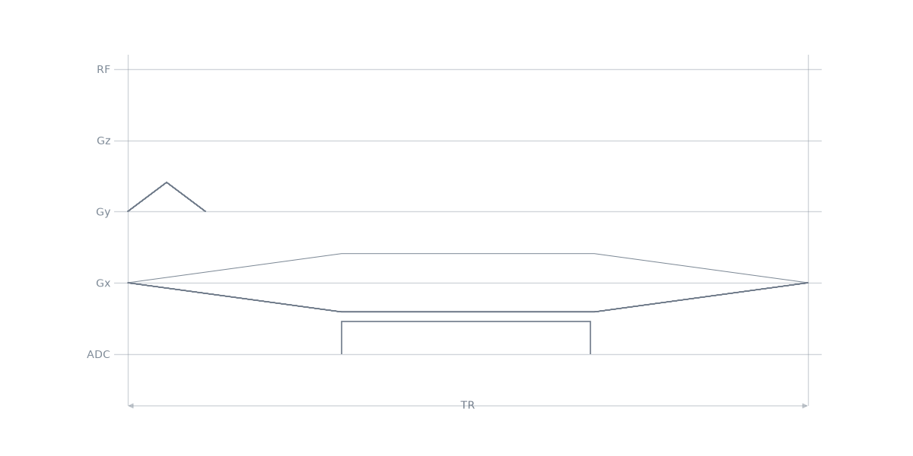
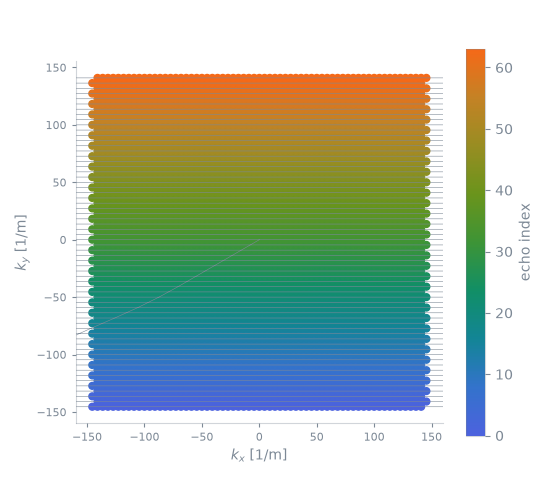
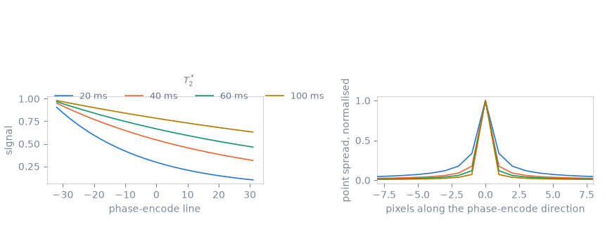
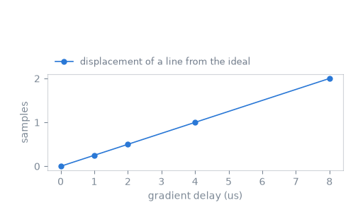

Note
Go to the end to download the full example code.
Single-shot echo planar#
The previous lesson divided the matrix over several shots. This lesson takes the segmentation to one shot, so that the whole matrix is acquired after a single excitation, and measures the two effects that limit such an acquisition: the signal decay over an echo train tens of milliseconds long, and the sensitivity of a train of alternating readouts to a delay between the gradient waveform and the acquisition. The relationship between shot count, distortion and scan time is measured in Segmented echo planar.
Learning objectives#
After this lesson, you should be able to:
build a single-shot echo planar readout with a one-line phase-encode blip;
read the traversal order of the echo train from the k-space trajectory;
compute the point-spread function that \(T_2^*\) decay across the train produces along the phase-encode direction;
measure the alternating k-space displacement a gradient delay introduces, and relate it to the half-field-of-view ghost.
One excitation, every line#
The blip advances one line rather than the number of shots, and the train runs the length of the matrix. Nothing else changes.
import numpy as np
import pypulseqpp as pp
system = pp.Opts(
max_grad=32.0,
grad_unit="mT/m",
max_slew=130.0,
slew_unit="T/m/s",
rf_dead_time=100e-6,
rf_ringdown_time=20e-6,
adc_dead_time=10e-6,
)
FOV = 220e-3
MATRIX = 64
THICKNESS = 5e-3
FLIP_ANGLE_DEG = 90.0
DWELL = 4e-6
rf, gz, gz_reph = pp.make_sinc_pulse(
flip_angle=np.deg2rad(FLIP_ANGLE_DEG),
duration=2e-3,
slice_thickness=THICKNESS,
apodization=0.5,
time_bw_product=4.0,
delay=system.rf_dead_time,
system=system,
use="excitation",
return_gz=True,
)
acquisition = MATRIX * DWELL
raster = system.grad_raster_time
gx = pp.make_trapezoid(
channel="x",
amplitude=MATRIX / FOV / acquisition,
flat_time=raster * np.ceil(acquisition / raster),
system=system,
)
adc = pp.make_adc(num_samples=MATRIX, dwell=DWELL, delay=gx.rise_time, system=system)
gx_pre = pp.make_trapezoid(
channel="x",
area=-(gx.amplitude * gx.rise_time / 2 + (MATRIX / 2 + 0.5) / FOV),
duration=5e-4,
system=system,
)
gy_pre = pp.make_trapezoid(
channel="y", area=-MATRIX / (2 * FOV), duration=5e-4, system=system
)
blip = pp.make_phase_blip(channel="y", fov=FOV, steps=1, system=system)
seq = pp.Sequence(system=system)
seq.add_block(rf, gz)
seq.add_block(gx_pre, gy_pre, gz_reph)
for echo in range(MATRIX):
readout = pp.scale_grad(gx, (-1.0) ** echo)
if echo == 0:
seq.add_block(readout, adc)
else:
seq.add_block(readout, blip, adc)
ok, errors = seq.check_timing()
echo_spacing = pp.calc_duration(gx)
print(
f"timing {ok}, {seq.num_blocks} blocks, "
f"echo spacing {1e3 * echo_spacing:.3f} ms, "
f"train {1e3 * MATRIX * echo_spacing:.1f} ms, "
f"blip {1e6 * pp.calc_duration(blip):.0f} us"
)
seq.paper_plot()

timing True, 66 blocks, echo spacing 0.700 ms, train 44.8 ms, blip 80 us
The trajectory#
One shot, coloured by the rank of each echo in the train: the acquisition starts at one corner of k-space and works across it, reversing direction at every line.
pp.plot.plot_kspace(seq, color_by="echo", plane="xy")

Decay across the train#
The last line is acquired tens of milliseconds after the first, and the transverse signal has decayed over that interval. Along the phase-encode direction the acquired data are therefore the true k-space multiplied by a decaying envelope, and the image is convolved with that envelope’s transform.
The echo times come from the analysis, and the line each echo lands on from the k-space it reports, so the envelope follows the sequence’s own ordering.
k_adc, _, t_excitation, _, t_adc = seq.calculate_kspacePP()
echo_time = t_adc.reshape(MATRIX, MATRIX).mean(axis=1) - t_excitation[0]
line = np.round(k_adc[1].reshape(MATRIX, MATRIX)[:, 0] * FOV).astype(int)
order = np.argsort(line)
T2_STARS = (20e-3, 40e-3, 60e-3, 100e-3)
def point_spread(t2_star):
"""The phase-encode point-spread function the decay produces."""
envelope = np.exp(-echo_time[order] / t2_star)
spread = np.abs(np.fft.fftshift(np.fft.fft(np.fft.ifftshift(envelope))))
return spread / spread.max()
def width(spread):
"""Full width at half maximum, in pixels, by linear interpolation."""
above = np.flatnonzero(spread >= 0.5)
first, last = above[0], above[-1]
left = np.interp(0.5, spread[first - 1 : first + 1], [first - 1, first])
right = np.interp(0.5, spread[last : last + 2][::-1], [last + 1, last])
return right - left
widths = {t2_star: width(point_spread(t2_star)) for t2_star in T2_STARS}

T2* decay over the train point spread
20 ms 0.100 1.51 px
40 ms 0.316 1.21 px
60 ms 0.464 1.13 px
100 ms 0.631 1.08 px
The envelope is not centred on the middle of k-space: the train runs from one edge to the other, so the decay is monotonic across the lines rather than symmetric about the line the echo is on. The result is a point-spread function that is both wider than one pixel and asymmetric: the blurring along the phase-encode direction of an echo planar image. At the shortest \(T_2^*\) here the signal at the last line is a tenth of the first and the point spread is half again as wide as a pixel; at the longest it is within a tenth of a pixel of the unblurred width.
The remedies are the ones the previous lesson measured — a shorter echo spacing, or fewer lines per shot — together with acquiring fewer lines outright, by partial Fourier or by parallel imaging.
Gradient delay and the odd echoes#
A delay between the gradient waveform and the acquisition displaces every sample along the readout direction by the distance k-space travels in that delay. The readouts alternate in polarity, so the displacement alternates in sign: the odd and the even lines of the matrix are shifted in opposite directions.
calculate_kspacePP() takes the delay as a
parameter, so the displacement is measured from the trajectory the analysis
reports rather than computed beside it.
DELAYS = np.array([0.0, 1e-6, 2e-6, 4e-6, 8e-6])
displacement = []
for delay in DELAYS:
delayed = seq.calculate_kspacePP(trajectory_delay=delay)[0]
kx = delayed[0].reshape(MATRIX, MATRIX)
# The echo of each line, where the ideal trajectory crosses zero.
centre = kx[:, MATRIX // 2] * FOV
displacement.append(
{
"delay": delay,
"samples": float(np.abs(centre[::2].mean() - centre[1::2].mean()) / 2),
}
)

delay odd-even displacement
0.0 us 0.000 samples
1.0 us 0.250 samples
2.0 us 0.500 samples
4.0 us 1.000 samples
8.0 us 2.000 samples
The displacement is the delay divided by the dwell time, and it is the same for every line, so the odd and the even lines differ only in its sign. A quantity that alternates from one line to the next along the phase-encode direction is, after the transform, an image displaced by half the field of view, which is the ghost an uncorrected echo planar acquisition shows. Measuring the delay and correcting for it are reconstruction steps, outside the scope of this package.
Total running time of the script: (0 minutes 0.476 seconds)